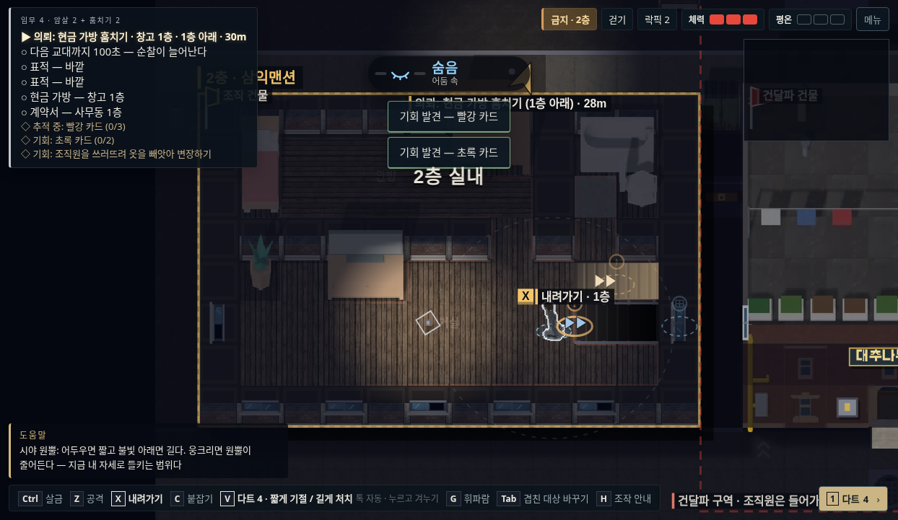
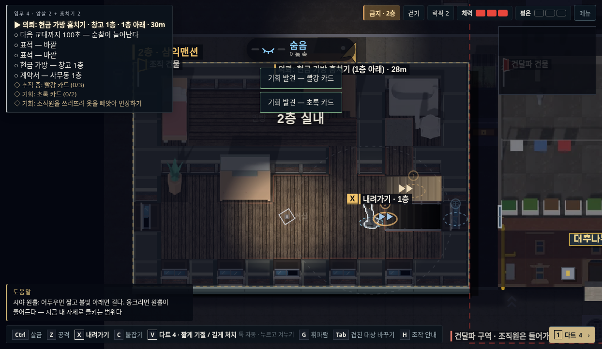

<!doctype html><html lang="ko"><meta charset="utf-8"><meta name="viewport" content="width=device-width,initial-scale=1"><title>야행 · 현재 시점 보강</title>
<style>*{box-sizing:border-box}body{margin:0;background:#101419;color:#e3e5e6;font-family:system-ui,-apple-system,"Noto Sans KR",sans-serif}main{max-width:1720px;margin:auto;padding:28px}header{display:flex;align-items:center;justify-content:space-between;border-bottom:1px solid #343a40;padding-bottom:18px}h1{font-size:20px;margin:0;font-weight:600}a{color:#c0c8c5;text-decoration:none;font-size:13px}nav{display:flex;gap:6px;margin:22px 0}button{font:inherit;color:#acb4b9;background:transparent;border:1px solid #343e44;min-height:44px;padding:0 22px;cursor:pointer}button[aria-selected=true]{background:#d5dbc8;color:#1a201e;border-color:#d5dbc8}button:focus-visible,a:focus-visible{outline:2px solid #d6b880;outline-offset:4px}.compare{display:grid;grid-template-columns:1fr 1fr;gap:16px}figure{margin:0;background:#151b23;border:1px solid #333b43}figcaption{padding:14px 18px;font-size:15px}img{display:block;width:100%;height:auto}footer{font-size:13px;line-height:1.9;color:#9aa5aa;margin:24px 0 0}footer strong{color:#d5dbc8;font-weight:500}@media(max-width:700px){main{padding:18px 12px}h1{font-size:17px}nav{margin:16px 0}nav button{padding:0 16px}.compare{grid-template-columns:1fr;gap:12px}figcaption{padding:9px 12px;font-size:13px}footer{font-size:12px}}</style>
<main><header><h1>현재 시점 보강</h1><a href="https://kkhkkh20-bit.github.io/yahaeng/?v=85">게임 실행 ↗</a></header>
<nav role="tablist" aria-label="비교할 공간"><button role="tab" id="street" aria-controls="compare" aria-selected="false" tabindex="-1">거리</button><button role="tab" id="interior" aria-controls="compare" aria-selected="true">2층 실내</button><button role="tab" id="roof" aria-controls="compare" aria-selected="false" tabindex="-1">옥상</button></nav>
<section class="compare" id="compare" role="tabpanel" aria-labelledby="interior"><figure><figcaption>기존</figcaption><a id="beforeLink" href="before-interior.png" target="_blank" rel="noopener"></a></figure><figure><figcaption>보강 후</figcaption><a id="afterLink" href="after-interior.png" target="_blank" rel="noopener"></a></figure></section>
<footer>대청소 맵 남서쪽의 3층 빌라 한 채에 적용했습니다.<br>시점·이동 좌표·문·계단·버튼 위치를 유지하고 벽 단면, 얇은 바닥 단면, 옥상 난간을 보강했습니다.<br><strong>새 에셋 0개 · 추가 그림 캐시 0개</strong><br>이미지를 누르면 원래 크기로 볼 수 있습니다.</footer></main>
<script>const tabs=[...document.querySelectorAll('[role=tab]')],names={street:'거리',interior:'2층 실내',roof:'옥상'};function select(tab){tabs.forEach(t=>{t.setAttribute('aria-selected',String(t===tab));t.tabIndex=t===tab?0:-1});for(const side of ['before','after']){document.querySelector('#'+side).src=side+'-'+tab.id+'.png';document.querySelector('#'+side).alt=(side==='before'?'기존 ':'보강 후 ')+names[tab.id];document.querySelector('#'+side+'Link').href=side+'-'+tab.id+'.png'}document.querySelector('#compare').setAttribute('aria-labelledby',tab.id);history.replaceState(null,'','#'+tab.id)}tabs.forEach((tab,i)=>{tab.onclick=()=>select(tab);tab.onkeydown=e=>{let n;if(e.key==='ArrowRight')n=(i+1)%3;else if(e.key==='ArrowLeft')n=(i+2)%3;else if(e.key==='Home')n=0;else if(e.key==='End')n=2;else return;e.preventDefault();select(tabs[n]);tabs[n].focus()}});if(names[location.hash.slice(1)])select(document.getElementById(location.hash.slice(1)));</script></html>
